| img | nome | marca | seção | variantes | págs |
|---|---|---|---|---|---|
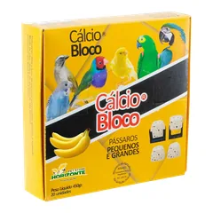 | Cálcio Bloco Com Aroma Banana - 20x01 | Pássaros | Pássaros | UN=00925 | [222] |
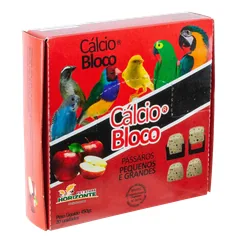 | Cálcio Bloco Com Aroma Maçã - 20x01 | Pássaros | Pássaros | UN=00927 | [222] |
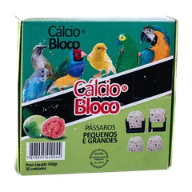 | Cálcio Bloco Com Aroma Goiaba - 20x01 | Pássaros | Pássaros | UN=00929 | [222] |
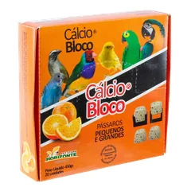 | Cálcio Bloco Com Aroma Laranja - 20x01 | Pássaros | Pássaros | UN=04339 | [222] |
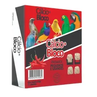 | Cálcio Bloco Com Aroma Pimenta - 20x01 | Pássaros | Pássaros | UN=00932 | [222] |
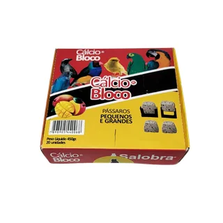 | Cálcio Bloco Com Aroma Manga - 20x01 | Pássaros | Pássaros | UN=08816 | [222] |
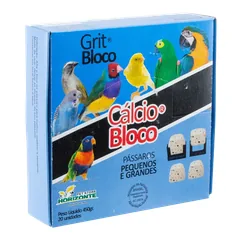 | Cálcio Bloco Com Aroma Grits - 20x01 | Pássaros | Pássaros | UN=02712 | [222] |
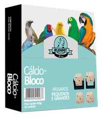 | Cálcio Bloco Para Pássaros Natural - 20x01 | Pássaros | Pássaros | UN=00416 | [222] |
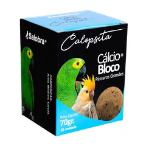 | Cálcio Bloco Grande Para Calopsita - 70G | Pássaros | Pássaros | UN=08633 | [222] |
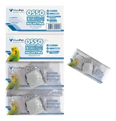 | Osso de Siba - Cartela Malha Fina - 12x1 Vivopet | Pássaros | Pássaros | UN=01570 | [222] |
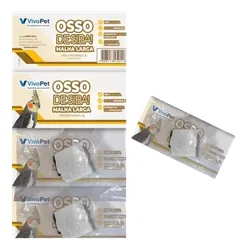 | Osso de Siba - Cartela Malha Larga - 12x1 Vivopet Pequena Média Grande | Pássaros | Pássaros | UN=00600, UN=00601, UN=03044, UN=04755, UN=04756, UN=04757, UN=06900 | [222] |
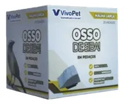 | Osso de Siba Malha Display - 20x1 - Vivopet Caneca Alumínio Para Papagaio Com Parafuso | Pássaros | Pássaros | FINA=06901, LARGA=06902 | [222] |
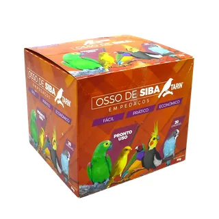 | Osso de Siba Universal Malha Fina e Larga Caixa 20 Unidades | Pássaros | Pássaros | UN=04760 | [222] |
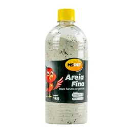 | Areia Para Pássaros Fina - 1KG | Pássaros | Pássaros | UN=03448 | [223] |
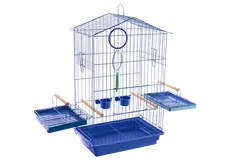 | Pássaros | Pássaros | Pássaros | AZUL=07000, PINK=07002 | [223] |
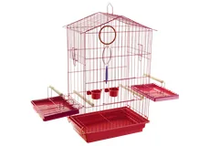 | Gaiola Calopsita Mansa Linha Encanto | Pássaros | Pássaros | VERMELHA=07001 | [223] |
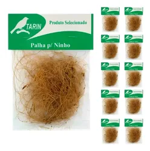 | Palhas Para Ninho Cartela - 10x1 | Pássaros | Pássaros | UN=06623 | [223] |
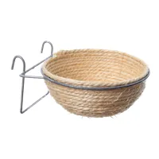 | Ninho de Corda Médio - Canário | Pássaros | Pássaros | UN=00318 | [223] |
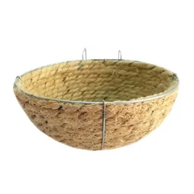 | Ninho de Corda Para Trinca-ferro | Pássaros | Pássaros | UN=01237 | [223] |
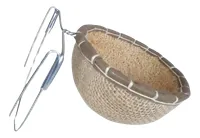 | Ninho Trinca Ferro Bucha | Pássaros | Pássaros | UN=05554 | [223] |
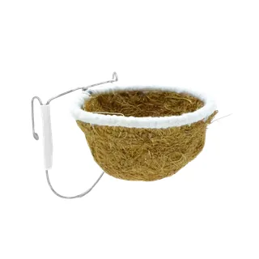 | Ninho Fibra de Côco Curió | Pássaros | Pássaros | UN=04862 | [223] |
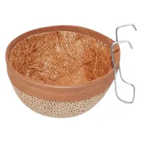 | Ninho Fibra de Bucha Curió | Pássaros | Pássaros | UN=04863 | [223] |
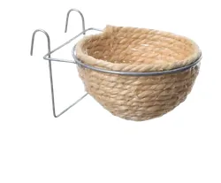 | Ninho de Corda Para Curió | Pássaros | Pássaros | UN=01236 | [223] |
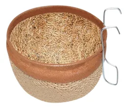 | Ninho Fibra de Bucha Para Coleira | Pássaros | Pássaros | UN=05555 | [223] |
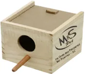 | Ninho Manon/ Mandarim | Pássaros | Pássaros | UN=02268 | [223] |
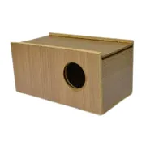 | Ninho de Mdf Para Periquito - Contrera | Pássaros | Pássaros | UN=06086 | [223] |
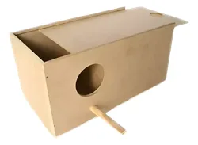 | Ninho de Mdf Para Agaporni - Contrera | Pássaros | Pássaros | UN=06087 | [223] |
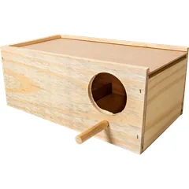 | Ninho de Mdf Para Calopsita - Contrera | Pássaros | Pássaros | UN=06088 | [223] |
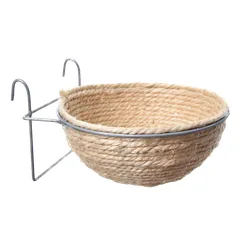 | Ninho de Corda Grande - Canário | Pássaros | Pássaros | UN=00319 | [223] |
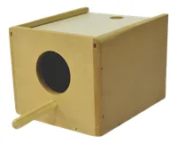 | Ninho de Mdf Para Manon - Contrera | Pássaros | Pássaros | UN=06999 | [224] |
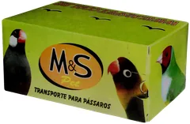 | Transporte Papelão Para Pássaros - 50x1 | Pássaros | Pássaros | UN=02944 | [224] |
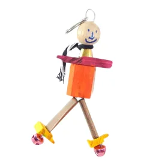 | A X L Espantalho Colorido Madeira Com Guizo 36041 M&s 20 X 18 Cm | Pássaros | Pássaros | UN=06490 | [224] |
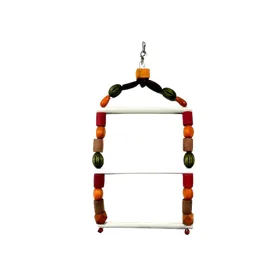 | 28 X 26 Cm A X L Escada Para Calopsita Colorida 34752 M&s 20 X 8 Cm | Pássaros | Pássaros | UN=06559 | [224] |
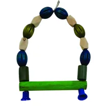 | Balanço Bola Colorida 37753 M&s | Pássaros | Pássaros | UN=06486 | [224] |
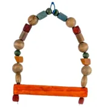 | Balanço Papagaio Grande 34770 M&s | Pássaros | Pássaros | UN=06487 | [224] |
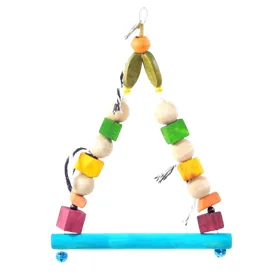 | A X L Brinquedo Balanço Médio - Colorido 36038 M&s | Pássaros | Pássaros | UN=06488 | [224] |
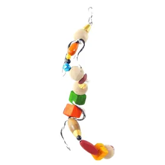 | A X L Brinquedo Espiral Colorido Com Guizo 36040 M&s | Pássaros | Pássaros | UN=06489 | [224] |
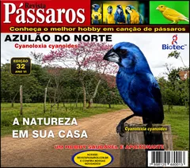 | Cd 002 Azulão do Norte | Pássaros | Pássaros | UN=02015 | [224] |
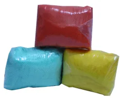 | Capa Para Gaiola Tnt - 6x1 - Nº2 20 X 18 Cm | Pássaros | Pássaros | UN=01347 | [224] |
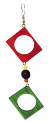 | Brinquedo Losango 02 (ref.24) | Pássaros | Pássaros | UN=03003 | [224] |
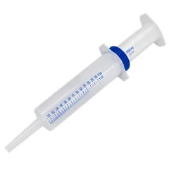 | Média Grande Pequena Seringa Para Alimentar Pássaros 28 X 26 Cm A X L | Pássaros | Pássaros | Nº1=04771, Nº2=04772, Nº3=04773, Nº4=04774, Nº5=04775, Nº6=04776, Nº7=04777, 10ML=05339, 5ML - 05338 30ML=05340, Nº8=08345 | [224] |
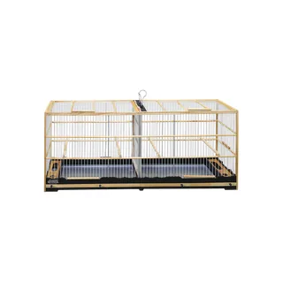 | Gaiola Voadeira Para Canário Terra (gm-53) Fibra 33 X 33 Cm A X L | Pássaros | Pássaros | Nº1=04764, Nº2=04765, Nº6=04769, UN=06992 | [224] |
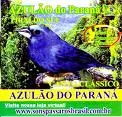 | Cd 003 Azulão do Paraná | Pássaros | Pássaros | UN=02016 | [225] |
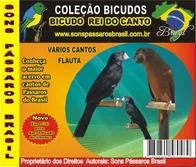 | Cd 004 Bicudo Rei do Canto | Pássaros | Pássaros | UN=02017 | [225] |
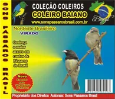 | Cd 010 Coleiro Baiano | Pássaros | Pássaros | UN=02020 | [225] |
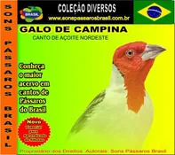 | Cd 017 Galo de Campina | Pássaros | Pássaros | UN=02023 | [225] |
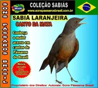 | Cd 018 Sabiá Laranjeira | Pássaros | Pássaros | UN=02024 | [225] |
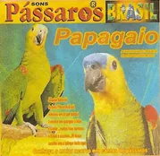 | Cd 019 Papagaio Novo | Pássaros | Pássaros | UN=02025 | [225] |
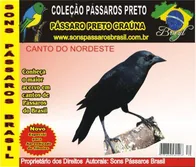 | Cd 020 Pássaro Preto Graúna | Pássaros | Pássaros | UN=02026 | [225] |
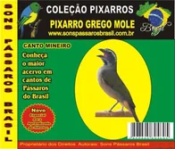 | Cd 022 Pixarro Grego Mole | Pássaros | Pássaros | UN=02028 | [225] |
| Cd 023 Pixarro Liso | Pássaros | Pássaros | UN=02029 | [225] | |
| Cd 024 Pixarro Seu Chico | Pássaros | Pássaros | UN=02030 | [225] | |
| Cd 026 Sabiá Ilha Bela | Pássaros | Pássaros | UN=02031 | [225] | |
| Cd 031 Roda Dos Canários Terras | Pássaros | Pássaros | UN=02032 | [225] | |
| Cd 035 Som Ambiente Pet Shop | Pássaros | Pássaros | UN=02034 | [225] | |
| Cd 042 Curiós do Brasil | Pássaros | Pássaros | UN=02037 | [225] | |
| Cd 044 Roda de Baderna Pixarros | Pássaros | Pássaros | UN=02039 | [225] | |
| Cd 046 Volume 01 20 Cantos | Pássaros | Pássaros | UN=02040 | [225] | |
| Cd 065 Sabiá Pardão Baiano | Pássaros | Pássaros | UN=02043 | [226] | |
| Cd 066 Pixarro Verdadeiro | Pássaros | Pássaros | UN=02044 | [226] | |
| Cd 068 Pintassilgo Baianinho | Pássaros | Pássaros | UN=02709 | [226] | |
| Cd 072 Curió Florianópolis | Pássaros | Pássaros | UN=02046 | [226] | |
| Cd 074 Pássaros do Pantanal | Pássaros | Pássaros | UN=02047 | [226] | |
| Cd 076 Roda de Coleiros | Pássaros | Pássaros | UN=02048 | [226] | |
| Cd 080 Fêmea de Pixarro | Pássaros | Pássaros | UN=02050 | [226] | |
| Cd 084 Canário Terra Estalo | Pássaros | Pássaros | UN=02051 | [226] | |
| Cd 085 Pássaro Preto Baiano | Pássaros | Pássaros | UN=02052 | [226] | |
| Cd 086 Amazônia Volume 1 | Pássaros | Pássaros | UN=02053 | [226] | |
| Cd 087 Amazônia Volume 2 | Pássaros | Pássaros | UN=02054 | [226] | |
| Cd 097 Curió Vo-vo-viu | Pássaros | Pássaros | UN=02055 | [226] | |
| Cd 099 Os Pintassilgos | Pássaros | Pássaros | UN=02056 | [226] | |
| Cd 103 Sabiás Brancos e Cinzentos | Pássaros | Pássaros | UN=02057 | [226] | |
| Cd 001 Alvorecer da Mata | Pássaros | Pássaros | UN=02014 | [226] |